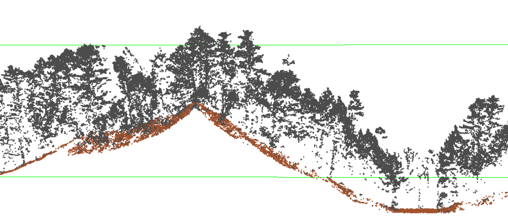
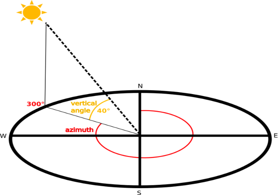
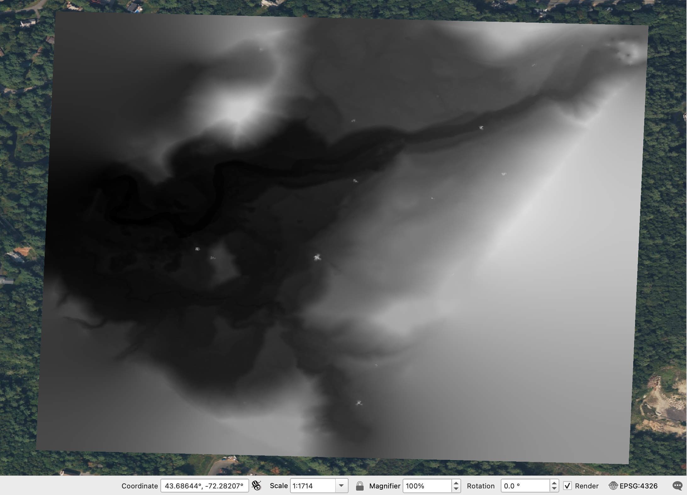
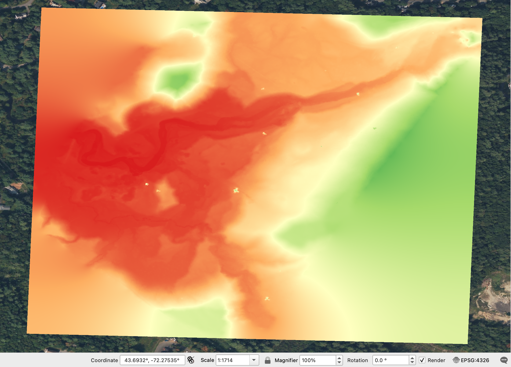
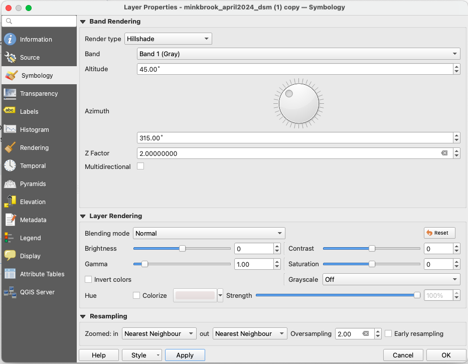
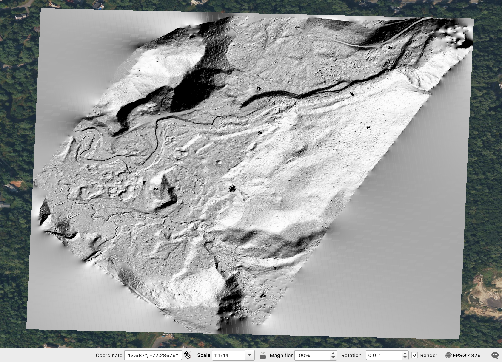
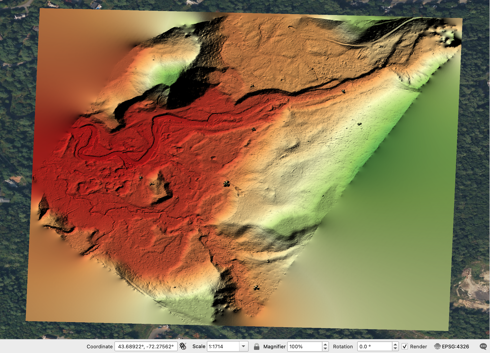
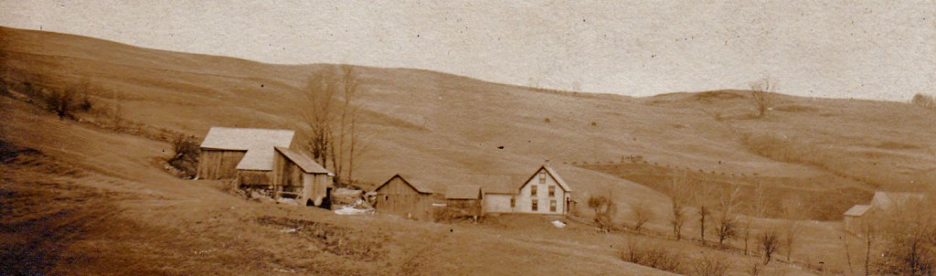
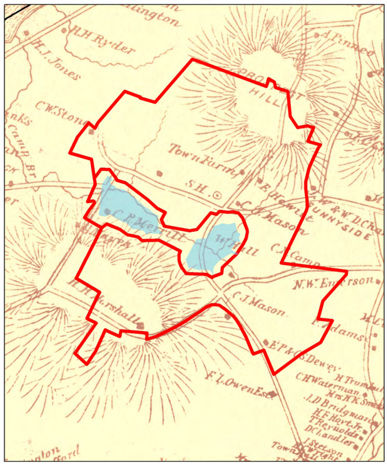
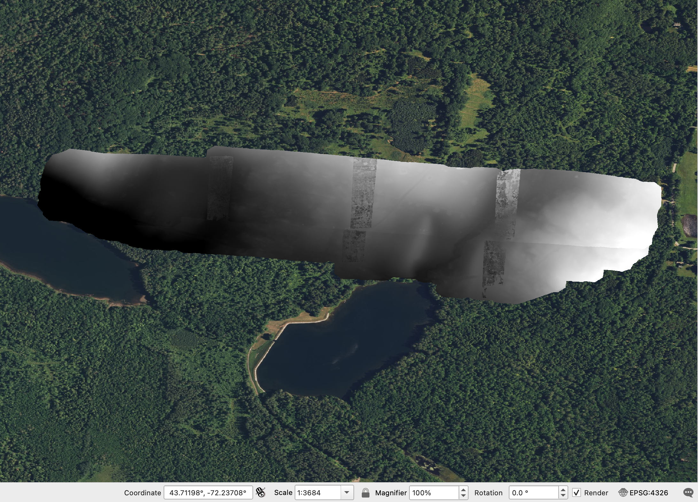

Drone Lidar and Hillshades
Drone Lidar of Mink Brook
In this section of the lab, we will search for archaeological features in drone lidar data produced by the SPARCL team used the DJI L1 lidar sensor. This is the same sensor and drone used in the Casana et al. (2023) paper on Picuris Pueblo from our readings this week. The public lidar is typically 1m spatial resolution, compared with 10cm resolution in drone lidar (100x better!). This enables us to much more clearly visualize archaeological features.
For this part of the lab, the raw point clouds derived from the lidar sensor have been filtered to remove as much vegetation as possible, and then interpolated to create a continuous, “bare-earth” model of the ground. This was achieved by classifying points as unclassified (1, black in the picture below) or ground (2, brown) using LASTools.

Hillshade visualization
To reveal the subtle agricultural features we will use a variety of “hillshades.” These are simply raster images in which we have digitally illuminated them from different low angles. By moving the imaginary light source around, we can often highlight topographic features that are otherwise invisible. Most hillshades are labeled by the direction of the faux sun or light source being used to illuminate them.

In QGIS, add minkbrook_april2024_dsm.tif, poorfarm25_part1_terradem.tif, and poorfarm25_part2_terradem.tif as raster layers. Zoom to minkbrook_april2024_dsm.

Right click on minkbrook_april2024_dsm, choose Properties. And in the Symbology dialogue, choose Singleband pseudocolor as the Render Type to visualize the elevation better.

Next, right-click on the DEM layer again, select Duplicate Layer (). In the new layer, possibly named minkbrook_april2024_dsm copy, change Symbology Render type to Hillshade, and change the Azimuth to 315°, Z-Factor to 2. Rename this layer by navigating to Information dialog and change the Layer name to something like minkbrook_april2024_dsm_hs315.

Now you should see something like this:

In the Layers panel, drag the color-ramp DEM visualization over the top of the hillshade. In the color-ramp, go to Layer Properties and change Symbology -> Layer Rendering -> Blending mode to Multiply.

Now duplicate the hillshade layer twice and change each of the duplicated layers’ hillshade azimuth to 0° and 45°. Rename these layers properly.
Which hillshade visualization, in terms of its azimuth, shows the cellar holes better? With reference to the orientation of the cellar holes, explain why.
Beyond the two cellar holes, we also saw mill footings and stone clearance walls during our visit. Can you identify them in QGIS? Also look for anything else you think might be an archaeological feature (as opposed to geological or modern trees). Experiment with other hillshades in to see which ones are most useful in revealing archaeological features.
Now move the vector layer that contains the two polygons you drew over the top of all layers in Layers panel. Toggle Edit () and Add Polygon Feature (). Map the additional archaeological features before saving layer edits.
Were you able to locate all the known archaeological sites and features in Mink Brook? Did you find any potentially unrecorded things? Provide a screenshot of your saved archaeology layer.
Drone Lidar of the Dartmouth Poor Farm
During the 19th century, the town of Hanover constructed a “poor farm”, a place for homeless, indigent, or poor people to live. These folks used to reside on the south side of Hanover, but were moved several miles away to an area of farms and fields. The Poor Farm was constructed near several existing farms and a small schoolhouse off Etna Road, as shown in this 1870s photograph.

In 1892, two reservoirs were constructed nearby to provide drinking water for Hanover (this is still where we get our water). Following a cholera outbreak at Cornell in 1907, the residents of all the farms and the poor farm were forcibly relocated again in order to protect the water supply, The area remained fenced off until it was reopened for limited recreation in 2017. Today, remains of several of the 19th century and earlier buildings are still visible, but many more are hidden in the forest. A map from the late 19th century shows the location of the Poor Farm “Town Farm.”

A drone lidar survey conducted in April 2025 reveals many of the hidden features. Zoom to layers poorfarm25_part1_terradem and poorfarm25_part2_terradem.

Visualize the DEMs in different hillshade configs.
What archaeological features are you able to identify in the Poor Farm/Trescott Reservoir lands lidar imagery? Report at least two sites (of preferably different types) with coordinates and screenshots.
How do the discoveries reported by Chase et al. (2011) and Pärssinen et al. (2026) change our understandings of the settlement and land use histories in Belize and the Amazon Basin respectively? What do you think might be missing from the lidar record that one might be able to see using other methods?
What kinds of archaeological features are Casana et al. (2023) able to identify in drone lidar data from Picuris Pueblo that might not have been visible using other methods? What do you think the location, number or scale of agricultural features around Picuris Pueblo suggests about the history of land use at the site, its population, or the presence of forest cover in the highland Southwest?
Based on your readings and your analysis of Mink Brook as seen in the public, aircraft-acquired lidar data, discuss the advantages and disadvantages of aircraft-acquired versus drone-acquired lidar for archaeology.